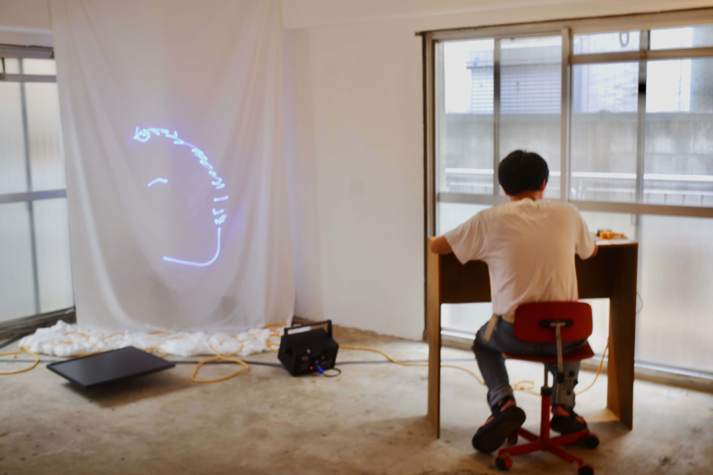
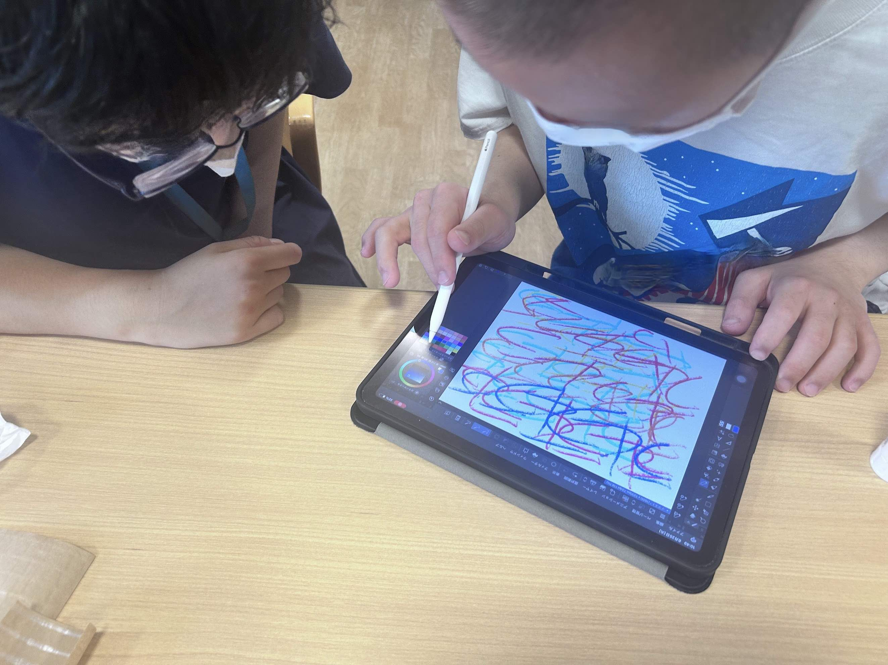
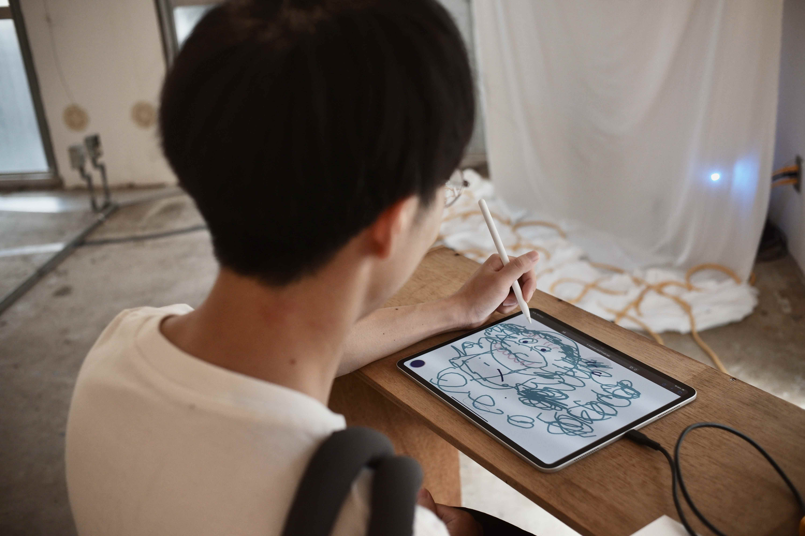
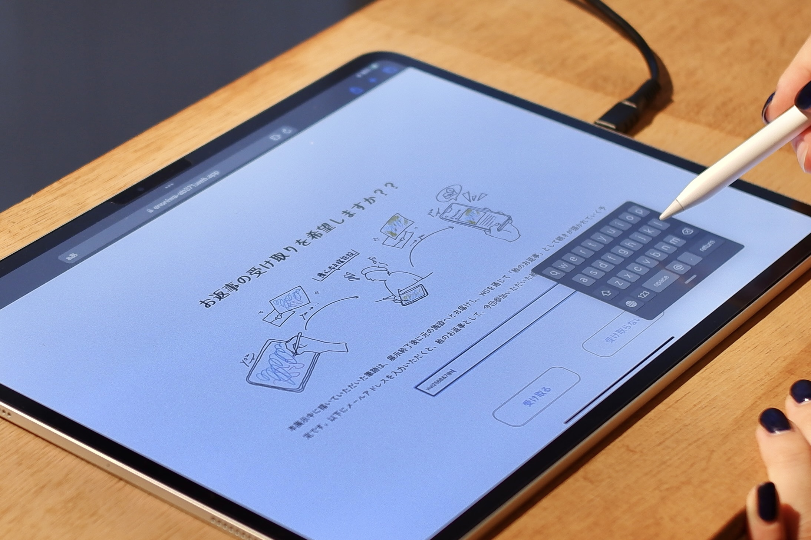
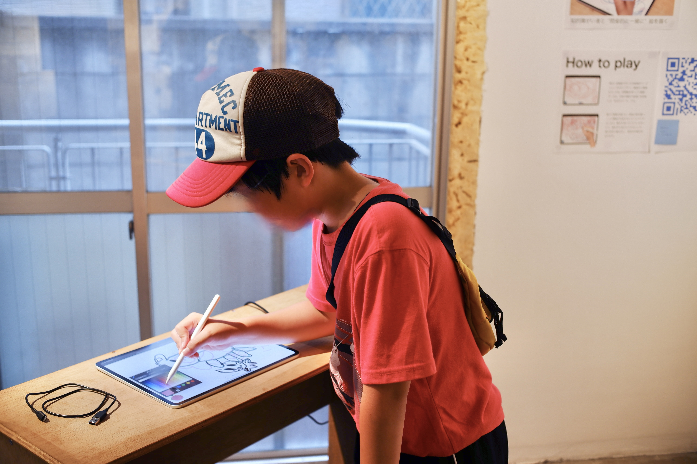
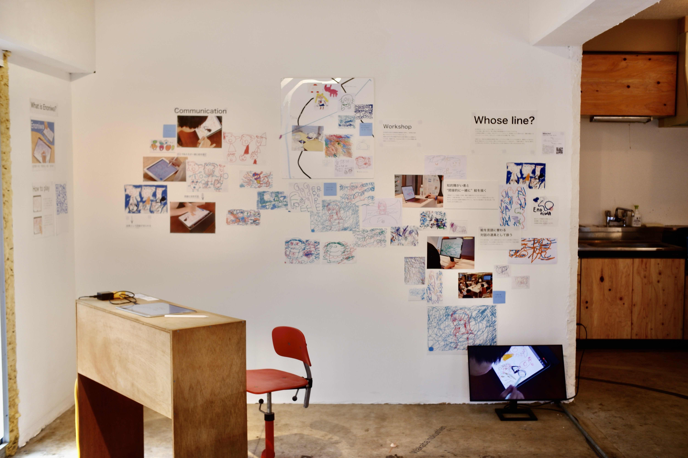
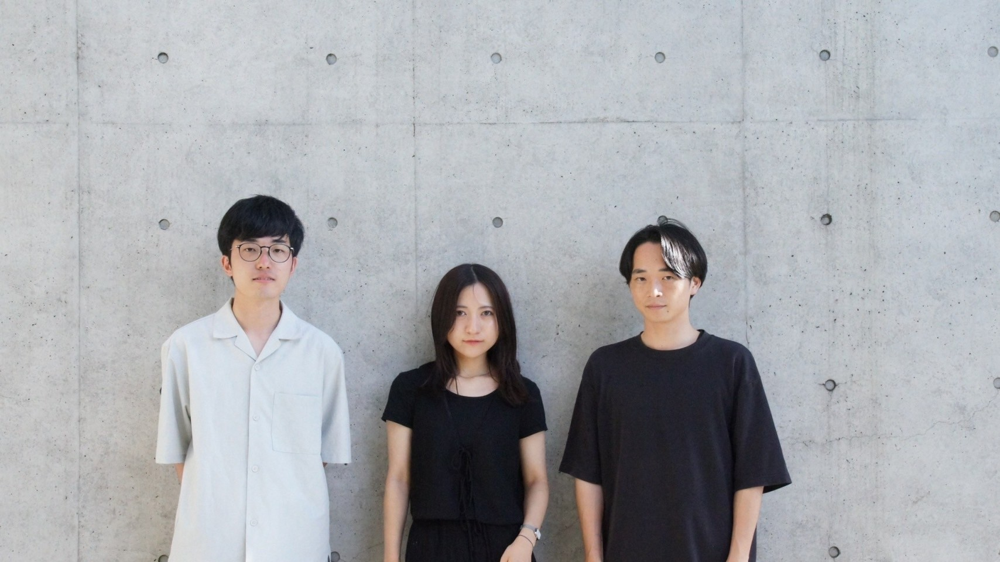

Enoniwa

drawing from Wakaba-Hukushien Akabane.

structure made of scrap materials designed by yuma Shinozaki
ギャラリーの周辺にある福祉施設で暮らす人と、絵の文通を通じて知り合うことができる体験型展示。
筆跡という、その人の特徴を如実に表すデータを言葉の代わりに用いることで、場所や偏見の垣根を超えた、地域内のコミュニケーションを促すことを目指した。
An interactive exhibition where people living in welfare facilities around the gallery can get to know each other through an exchange of drawings.
By using handwriting, which vividly represents a person's characteristics, instead of words, we aimed to promote communication within the community that transcends barriers of location and prejudice.
Drawing as a communication language 🖌️
画像解析によって、iPad上での自由なお絵描きから、時間の伴った筆跡データを抽出。webアプリケーション上でデータを読み込み筆の動きを再現、さらに表示されている線とのインタラクションを可能にする仕組みを構築した。
この仕組みを用いることで、絵を単なる完成された作品としてではなく、時間軸を伴う過程として扱うことが可能となる。
By using image analysis, we extracted time-based handwriting data from freehand drawings on an iPad. We then built a system that reads the data on a web application, reproduces the brush strokes, and enables interaction with the displayed lines.
Now, we can treat drawings not as completed works but as processes with time.
Exhibition that connects people through drawings exchange 📩
福祉施設と周辺との関わりを作るきっかけとして、近年では利用者の描く絵を公共のギャラリーに展示するなどの取り組みがある。
私たちは、絵をその描かれるプロセスと一緒に記録し展示することによって、完成された作品の鑑賞を超えた、連続的なコミュニケーションの生まれる空間を作れると考えた。
あらかじめギャラリー周辺にある2ヶ所の福祉施設にて利用者のお絵描きの過程を記録し、データ化。ギャラリーでは来場者がiPadのwebアプリを通じて新たな筆跡を続けて描くことができる。さらにメールアドレスを登録すると、会期終了後に施設から「お返事」としての絵の続きを受け取ることができる仕組みとした。
As an initiative to create connections between welfare facilities and their surroundings, in recent years, there have been efforts to display drawings by facility users in public galleries. We believed that by recording and exhibiting the process of creating drawings, we could create a space for continuous communication that goes beyond simply appreciating completed works.
In advance, we recorded and digitized the drawing process of users at two welfare facilities around the gallery. At the gallery, visitors can continue drawing new brush strokes through a web application on an iPad. Additionally, by registering their email addresses, visitors can receive a continuation of the drawing as a "reply" from the facility after the exhibition period ends.





Acting with
Shiori Kitabayashi / Yuta Yoshida

made with TouchDesigner / Python / React / P5.js / Firebase
🖥️